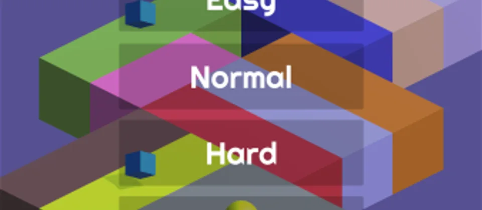

Tap early
React before the edge, not while you are already falling.
Amazing Track
Amazing Track is a minimalist endless runner where one button changes your direction. Survive as long as possible.
Play Amazing Track
Basics
Runner
React before the edge, not while you are already falling.
Short turns feel easier when you tap in a steady rhythm.
Short games are about quick retries and improving a little each time.